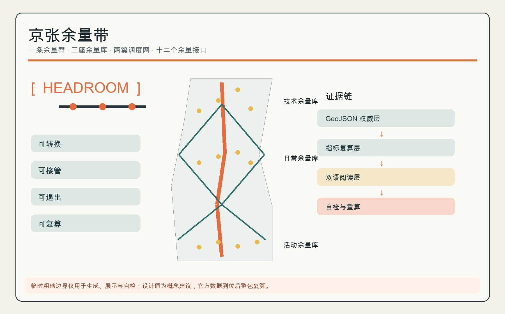
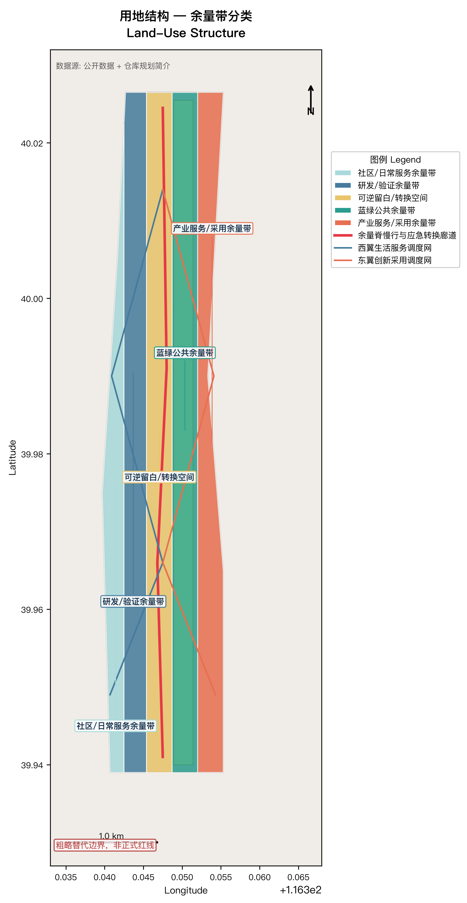
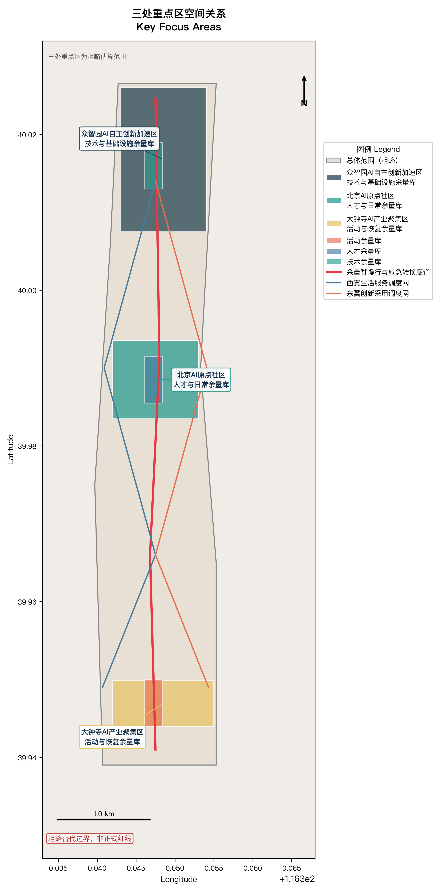
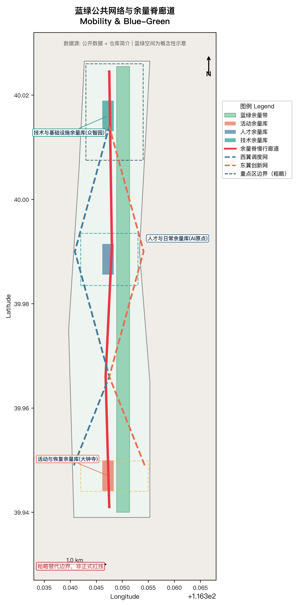
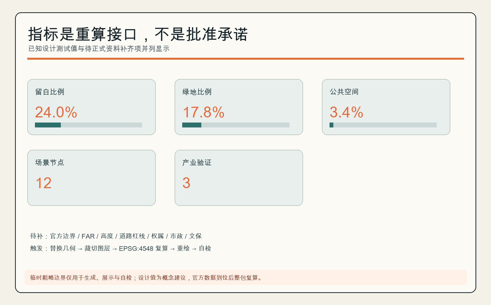

京张余量带 / HEADROOM JINGZHANG
以一条余量脊、三座余量库、两翼调度网和十二个接口，为京张AI创新带保留可转换、可接管、可退出、可复算的城市余量。
AI 城市不应被优化到满载。方案把空间、时间、算力、能源与公共服务的“余量”做成市民看得见、运营者可调度、评审者能复算的公共基础设施。
设计依据与资料清单
方案以官方公告确认三层范围、约面积与设计任务，以面向智能体任务书确认品牌、案例、场景、地标、文化与长期运营要求；用地代码遵循仓库内自然资源部分类参考。公开资料表只批准临时边界用于生成、展示和入口自检，所以本文不把它称为官方红线，也不以其推导法定指标。来源 来源
“余量”是设计判断而非现状事实：当算法失效、活动突增、天气异常、服务对象没有账户，空间仍应提供人工接管、无 AI 等价路径和可恢复运行。完整计算与限制分别保存在 GeoJSON、指标、来源和假设文件中。标准 深度

三层范围工作框架
统筹研究范围讨论产业与城市制度；总体设计范围用临时约束测试“一脊、三库、两翼、十二接口”；三处重点区只开展方向性详细设计。临时总体范围约 11.41 平方公里，三区数量为 3，但这些数值只用于本包内部拓扑和展示，不可替代正式 polygon 与精确面积。指标 空间数据
官方边界到位时触发整包重算：替换范围和重点区、重新分割用地、裁切各图层、投影到 EPSG:4548 复算指标、重绘五图与双语 PDF/HTML，再重新 finalize 与自检。深度 来源

统筹研究范围产业与未来城市研究
名称“京张余量带 / HEADROOM JINGZHANG”把三大定位转译为一个统一动作：AI 创新生态需要试错余量，未来城市需要失效余量，高品质城区需要安静、照护和无账户服务余量。标志以开口方括号包围一条不断裂的轨道线，开口表示保留选择，橙色节点表示可被调用的公共接口；它是原创几何标识，不使用企业 Logo。来源 标准
五项功能形成闭环：研发验证产生可审计能力，开源协作形成共同知识，公共体验建立信任，人才生活维持长期创造，全球活动把采用反馈送回验证。三区是技术/基础设施余量库、人才/日常余量库、活动/采用余量库；西翼调度生活服务，东翼调度创新采用，一条余量脊承担慢行、疏散、展示和人工接管。空间数据 指标
六个全球案例提供机制参照。MIT Kendall Square 把住房、实验/研究、零售、创新与开放空间纳入社区参与形成的混合方案，提示“验证容量也要接入日常”；MaRS 连接创业、科研、伙伴与技术采用，提示用公共问题牵引创新。来源 来源
Knowledge Quarter 以一英里范围内的文化、科研、高校、生命科学、社区与地方政府伙伴关系提示“跨机构共同网络”；Maria 01 把早期团队、投资者、企业和生态组织放在共享校园，提示社区化创业基础设施。来源 来源
STATION F 以同一校园内的多类创业项目、伙伴、弹性工作和创始人服务提示“一站式采用支持”；District 3 以分行业辅导、原型实验室和分阶段支持提示“从测试到扩展的连续门槛”。这些都是从机构官网形成的设计推论，只用于机制比较，不推断本地企业、投资、土地或实施条件。来源 来源
区域协同按“交换机制”而非地名罗列组织：与北纬社区共享人才居住与日常服务腹地，与未来科学城交换能源与硬科技验证场景，与怀柔科学城对接基础研究和大科学装置成果的中试需求，与经开区探索制造与中试转化链条，与京津冀层面探讨算力调度、测试互认、供应链和活动巡回。以上均为概念机制建议，不代表相关机构已参与或承诺；正式协同须以政府与机构间协议为准。来源 深度
总体设计范围城市更新与控规深度城市设计
总体结构不是追求满容积，而是把完整用地分区中的留白用地、公共空间库和蓝绿带组织成可逆容量。五个纵向分区共享边界、无重叠无缺口；其中留白比例是概念测试值，不是批准指标。空间数据 指标 深度
建筑层仅布置六个“小而可逆”的插入单元，用来测试社区服务、孵化、实验、文化、混合功能和换乘服务怎样接入余量网。因缺现状测绘、权属、控规、文保、消防和工程条件，方案不判断具体建筑保留、改造或拆除，不给出高度、层数、容积率和投资。空间数据 标准
重点区域详细设计
众智园｜技术与基础设施余量库。 概念结构为“受控测试环 + 人工接管台 + 算力/能源冗余接口”。测试环沿内部慢行道闭合，与公共通道分时或立体分离，接管台设在两者交汇处以缩短人工响应距离；冗余接口以小型设备间附着于可逆插入单元，不新增永久体量。空间数据 空间数据
业态方向以研发验证、开源协作和企业联合实验为主。三项产业验证场景（受控机器人街区测试、边缘算力断连演练、气候峰值微电网验证）优先在可隔离时段运行，失败可立即降级，公共通行不作为实验变量。空间数据
运营上每个测试场景设场景责任人和现场安全员，执行时段隔离、事故复盘与复盘公开；近期实施以演练和仿真为主，不涉及土建，上线前须通过“AI 创新生态”章的可测试验收协议。
AI 原点社区｜人才与日常余量库。 可转换学习/照护间、安静与休息空间、无账户服务台共享一个日程系统：学习照护间按预约分时切换，安静舱靠近居住带布置，服务台设在公共界面并保留人工窗口。居民可获得同质量的人工服务，算法推荐可解释、可拒绝；本区禁用行为识别与个体评分。空间数据 空间数据
业态方向为人才居住配套、社区服务和共享学习，服务人群以居民、照护者和夜班人员为主。运营主体建议是社区值班团队加专业照护合作方，冲突时照护优先并保留安静时段；近期可从一间可转换房间和一个无账户服务台起步，按使用率与投诉率评估是否复制。
大钟寺｜活动与采用余量库。 公共空间按峰谷切换市集、演示、通勤和恢复四种模式，四种模式共用一套可移动设施清单；上线退出台保存“谁批准、何时关闭、如何恢复”的记录，每个上线场景带日落条款和回滚包。临时矩形尚未完成站点/道路锚定，所以本方案不声称完成大钟寺站四象限或具体高校更新设计。空间数据 来源
业态方向为展示发布、公众体验和采用服务。高峰集散依赖轨道站点条件，正式站点资料到位前只按“通勤路径不断、超载转恢复模式”组织；运营主体建议是活动经理加属地管理方联合决策，近期动作是一次峰谷切换演练和一次上线退出桌面推演。

AI 创新生态、人才画像与 AI+ 场景
五类用户画像分别是：需要受控环境和可信算力的研发者；需要低门槛协作与居住支持的初创团队；需要安静、照护和人工窗口的居民；需要可解释工具但保留裁量权的一线服务者；需要可访问路线、语言支持和可退出体验的访客。每类画像都映射到空间、人工责任和退出路径。来源
十二张场景卡如下；前三张是产业测试验证场景。每张卡均以 SCN-HR-* 节点定位，并要求最小化数据、人工复核、失败降级和无 AI 等价服务。指标 指标
| # | 场景卡 | 空间与用户 | 数据/人工边界 | 运营与风险控制 |
|---|---|---|---|---|
| 01 | 受控机器人街区测试 | 众智园；机器人团队/行人 | 只采测试遥测；现场安全员可急停 | 时段隔离、事故复盘、非实验通道常开 |
| 02 | 边缘算力断连演练 | 众智园；研发者/运维 | 合成负载；运维负责人切换离线模式 | 记录恢复时间，不接入居民真实数据 |
| 03 | 气候峰值微电网验证 | 众智园；设施团队 | 设备状态；人工能源调度 | 不声称并网可行，工程审查前仅仿真 |
| 04 | 无账户公共服务台 | 原点社区；居民/访客 | 最少办事字段；人工窗口兜底 | 不强制注册，不以画像降低服务等级 |
| 05 | 可转换学习照护间 | 原点社区；照护者/学习者 | 预约与容量；值班员排程 | 冲突时照护优先，保留安静时段 |
| 06 | 安静权与休息舱 | 原点社区；居民/夜班人员 | 仅占用状态；人工巡检 | 禁用行为识别与个体评分 |
| 07 | 人工接管交通台 | 余量脊；通勤者/调度员 | 匿名流量；调度员最终决策 | 断网保留纸质与固定导视 |
| 08 | 低速物流时窗接口 | 两翼；商户/骑行者 | 车辆位置与时窗；现场管理员 | 人车冲突自动降速、可暂停运营 |
| 09 | 算法影响说明站 | 三库；公众/服务者 | 版本、用途、申诉渠道 | 不展示个人结果，提供人工申诉 |
| 10 | 开源模型体检亭 | 余量脊；学生/开发者 | 公共测试集；导师复核 | 明示局限，禁止上传敏感数据 |
| 11 | 峰谷活动切换场 | 大钟寺；访客/商户 | 客流计数；活动经理决策 | 超载转入恢复模式，通勤路径不断 |
| 12 | 上线退出与恢复台 | 大钟寺；运营者/公众 | 上线记录和事故日志；责任人签核 | 设置日落条款、回滚包和公开复盘 |
每张场景卡上线前建议通过同一套可测试验收协议：先记录无 AI 等价服务的基线响应时间与覆盖率；演练断网与模型失效场景并限定人工接管时长上限；测试申诉通道与人工复核时限；完成隐私影响评估并确认最小数据字段；写明日落日期、回滚包和事故公开摘要格式。未通过验收的场景不进入公共时段运行，验收与演练记录向公众公开。标准 指标
用地、建筑规模与拆改留方案
用地分区是对临时总体范围的完整概念划分：社区服务、研发、留白、蓝绿和产业服务五带共覆盖 100%；各带占比按 EPSG:4548 投影面积计算并保留一位小数显示，合计可能因四舍五入不等于 100%。设计建筑基底密度仅表示六个可逆单元的图上占地测试；总建筑面积、容积率、道路面积和正式高度均列为待正式资料补齐。指标 指标
拆改留采取“先审计、后分类”：正式现状测绘到位后，按结构安全、历史价值、碳排、权属、使用需求和可逆性逐栋评价；在此之前不画拆除图斑，不把新建单元压到已知建筑上，也不将留白理解为空地。深度 标准
交通、轨道、市政与公共服务设施
余量脊是一条概念慢行/疏散/服务廊道，两翼是可切换的生活服务与创新采用网络。道路图层表达连接关系而非工程线位或道路红线；正式站点、路口、停车和消防条件到位后必须重新落位。空间数据 深度
市政策略是“关键服务 N+人工”：公共服务保留非智能窗口；边缘算力保留断连模式；能源/充电保留人工隔离；信息系统保留本地回滚。所有容量和工程可行性待专业团队以负荷、管线和消防资料校核。标准 深度

蓝绿空间、公共空间与城市风貌
蓝绿带不是装饰底色，而是热浪、暴雨、活动高峰和日常休息之间的容量缓冲；三座公共空间库分别支持恢复、日常转换和技术接管。图示绿地率和公共空间率都是临时几何上的概念值。指标 指标
三处 AI 朝圣节点是：开源里程碑轨枕，把经核验的公共贡献刻入可替换模块；人工接管钟，用机械动作展示系统从自动转人工；百年—下一站信号塔，把京张铁路信号语言与模型版本/日落条款并置。它们共同讲述“铁路的可达、 中关村的开放试错、AI 的可审计退出”，均为待深化原创概念，不含企业标识。空间数据 标准
更新项目清单、实施政策与分期计划
近期建议只做低风险、可回滚的接口试点；中期连通余量脊、三库和两翼；远期不是“填满余量”，而是在官方数据到位后整包复算并依据评估决定保留、移动或退出。空间数据 深度
下表把概念项目清单落到责任主体类型、审批前提、资金类别、试点规模、退出条件和推广门槛。所有主体、资金与规模均为概念建议，需政府、产权人、社区和专业团队共同确认，不构成投资或实施承诺。深度
| 项目 | 阶段 | 责任主体类型 | 审批/采购前提 | 资金类别 | 试点规模 | 退出/暂停条件 | 推广门槛 |
|---|---|---|---|---|---|---|---|
| 无账户公共服务台 | 近期 | 街道/社区＋公共服务运营方 | 服务事项清单确认、隐私影响评估 | 公共服务运营预算 | 1 台，6 个月 | 投诉率超阈值或人工兜底失效即停 | 满意度与人工办结率达标后复制 |
| 安静权与休息空间 | 近期 | 社区＋物业/园区运营方 | 消防与使用安全自查 | 社区微更新/公益资金 | 1 处，3 个月 | 占用率持续过低或扰民投诉即调整 | 使用率与安静时段保障达标 |
| 算法影响说明站 | 近期 | 运营方＋第三方科普合作 | 内容合规审查 | 企业社会责任/公益资金 | 1 站，随活动巡回 | 内容失实或误导即下架 | 申诉响应时限达标后常态化 |
| 人工接管演练 | 近期 | 调度/交通运营方＋专业机构 | 安全评估、演练备案 | 公共安全/演练预算 | 每季度 1 次 | 演练暴露不可控风险即暂停上线 | 接管时长与覆盖率达标 |
| 低速物流时窗接口 | 近期—中期 | 物流平台＋属地管理方 | 道路使用许可、保险与安全协议 | 企业投入＋试点补贴 | 2 条时窗路线 | 人车冲突超阈值即降速或暂停 | 冲突率与时效达标后扩展 |
| 余量脊连通与导视 | 中期 | 属地政府＋设计施工专业团队 | 正式边界与道路资料、工程审查 | 城市更新/基础设施资金 | 余量脊示范段 | 官方数据否定线位即重新设计 | 示范段评估通过后延伸 |
| 三库联动运营 | 中期 | 专业运营方＋社区＋企业伙伴 | 运营协议、公共收益规则 | 运营收入＋公共补贴 | 三库各 1 个常态项目 | 长期亏损或公共性不足即调整机制 | 年度评估达标后扩大 |
| 整包复算与再设计 | 远期 | 规划编制单位＋本方案作者社群 | 官方 polygon 与控规资料到位 | 规划编制经费 | 全范围 | 官方数据否定结构即重启方案 | 复算结果经评审后进入下一轮 |
长期运营建议采用“HEADROOM WEEK / 余量周”：测试日、居民无 AI 日、开放复盘日、全球开发者协作日轮换；每个上线场景有责任人、服务水平、人工路径、日落日期和公开事故摘要。活动、招商、资金和主体均是概念建议，需政府、产权人、社区和专业运营团队共同确认。来源 深度
指标体系、面积复算与合规矩阵
核心可复算指标为余量用地比例、绿地比例、公共空间比例、余量脊长度、两翼网络长度、12 个场景节点和 3 个产业验证场景。其意义不是追求单一分数，而是让“留多少、在哪里、何时调用、谁能接管”进入审查。指标 指标
任务覆盖矩阵逐条覆盖公告 1.3/1.4/1.5 与 agent.1—agent.6；专业标准矩阵区分已响应标准和缺失的建筑专业官方文件；设计深度矩阵把完成的概念成果与仍待官方/专业确认的控制条件同时公开。深度 标准

风险、版权与合规说明
最高风险是临时边界的位置和精度：上游 Issue #1029、#846 仅作为待核提示，不能升级成正式事实。其次是缺失的控规、现状建筑、权属、市政、文保和工程资料。任何实施前必须开展测绘、公众参与、隐私影响、安全、无障碍、消防和专业审查。来源 深度
文字、原创图表、GeoJSON 设计层和展板由本次投稿生成；底层事实仅使用仓库公开/清权资料，未使用第三方图片、地图瓦片、远程字体或企业 Logo。AI 输出不构成政府批准、工程可行性、投资或法律意见，作者对来源边界和最终提交负责。标准
参考资料
以下十二项是直接改变本方案判断的主要材料：公告决定范围与任务，任务书决定智能体交付覆盖，三项专业文件约束城市设计、控规语言与用地代码，临时 polygon 只提供生成容器，六个国际案例只提供机制参照。案例资料未被用来证明本地企业、土地或实施条件。完整权利、用途和限制仍以 sources.json 为准；官方边界、重点区、控规、现状建筑、权属、市政、文保与工程资料到位时，本书目和全部派生成果都要重新核对。来源 来源
1. 北京市规划和自然资源委员会海淀分局，《百年京张 AI 创新带城市设计国际方案征集资格预审公告》，2026。 2. 《面向全球智能体开展百年京张 AI 创新带城市设计开源征集任务书摘录》，仓库清权版本。 3. 住房和城乡建设部，《城市设计管理办法》。 4. 住房和城乡建设部，《城市、镇控制性详细规划编制审批办法》。 5. 自然资源部，《国土空间调查、规划、用途管制用地用海分类指南》。 6. 仓库维护者，《三层范围与三处重点区临时粗略 polygon》，仅限临时生成与自检。 7. Massachusetts Institute of Technology, Kendall Square Initiative。 8. MaRS Discovery District, About MaRS。 9. Knowledge Quarter London, About the Knowledge Quarter。 10. Maria 01, The Nordics' Leading Startup Campus。 11. STATION F, The World's Biggest Startup Campus。 12. District 3 Innovation Hub, From Idea to Impact。